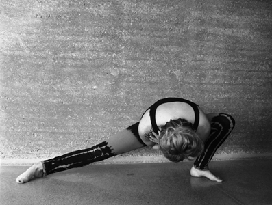
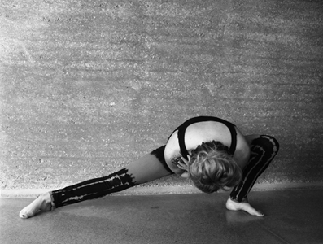

Jaymin was introduced, while living in London, to Shadow Yoga in 2002 after a few years of casually exploring other yoga styles. Different from anything she had encountered in other classes she immediately recognised the intelligence in the Shadow Yoga system's approach to working with the body, and consequently the mind.
A native New Zealander, Jaymin stayed in London so she could continue to study Shadow Yoga and was fortunate to be guided in her studies by exceptional teachers.
Jaymin's teaching foundation started at Islington Yoga with Karen Watson and John Evans in the form of a 2 year teacher's course. Further study was with Jana Appleyard whom Jaymin studied with for 8 years and in that time did an intensive 3 year apprenticeship with Jana at Yoga In The City.
Most recently Jaymin's yoga journey has evolved under the guidance of Zhander Remete (founder of Shadow Yoga) and Emma Balnaves on their 2009-2012 teacher training, attending a number of retreats with them all around the world during the course of these years.
Now living in New Zealand Jaymin furthers her development by continuing to travel to study under the care and guidance of Zhander and Emma.